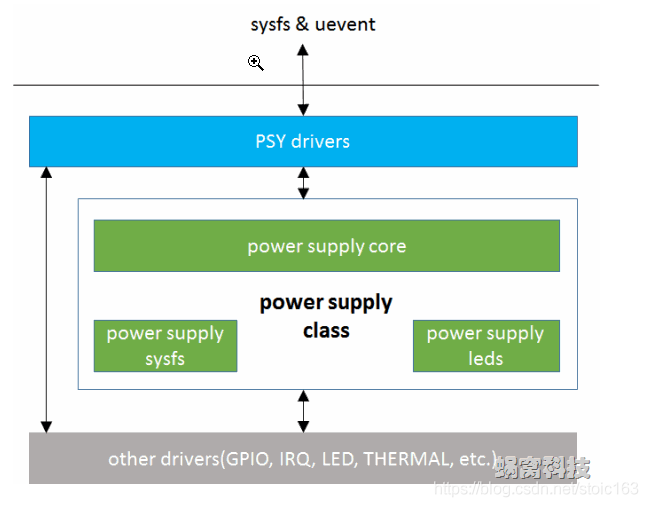

概述
mt6762平台psy uevent上报分析
参考
导读
uevent是什么呢？ uevent是一种linux设备模型中的一个组成部分。kset中包含的uevent_ops结构体拥有uevent的操作函数。 uevent可以在设备发生变化时主动通知应用层。是对普通先注册设备后注册驱动模式的一种补充。一般用作usb设备的自动驱动加载、电池电量上报等。
2，uevent主动通知应用层的原理是什么？ 有两种方式，第一种是设置环境变量后使用call_usermodehelper_setup函数直接调用应用层程序；第二种是通过netlink向应用层发送消息，在应用层的守护进程收到消息后完成相关操作。其中第一种本方式较少使用，以第二种为主。 ps：netlink是一种基于socket的内核空间与用户空间的双向通信机制，十分灵活好用。
3，sys目录下有许多uevent节点，它们是干什么的？ 最开始我对uevent的理解感到困惑就是因为这些uevent节点，如cat /sys/devices/soc/qpnp-smbcharger-17/power_supply/battery/uevent节点可以查看到电池状态，充放电电流等等信息，好像uevent就像其他sysfs中的节点一样仅仅供上层读取。然而这并不是uevent的全部，在上面解释的uevent机制中是完全不需要这些节点存在的，事实上上层也并不会去使用这些节点。这些节点的存在仅仅是为了调试目的，可以提供一种简单方式检测到uevent的中间信息。但在android的电源管理结构中电池的相关信息是通过读取/sys/devices/soc/qpnp-smbcharger-17/power_supply/battery/uevent节点获取的，netlink消息只发出KOBJ_CHANGE的action kobject_uevent(&cm->dev->kobj, KOBJ_CHANGE)，去触发上层读取sys节点。 注意：这些uevent节点与/dev/input/eventX节点虽然名字相似，但其原理和作用是完全不同的。eventX节点是输入子系统的事件上报接口，需要上层来读取eventX节点。
power_supply电源框架介绍
power supply framework在kernel/drivers/power/下。内核抽象出来power supply子系统为驱动提供了统一的框架。
功能包括：
1.抽象PSY设备的共性，向用户空间提供统一的API；
2.为底层PSY驱动的编写，提供简单、统一的方式，同时封装并实现公共逻辑。
power supply class位于drivers/power/目录中，主要由3部分组成（可参考下图的软件架构）：
1）power_supply_core，用于抽象核心数据结构、实现公共逻辑。位于drivers/power/power_supply_core.c中。
2）power_supply_sysfs，实现sysfs以及uevent功能。位于drivers/power/power_supply_sysfs.c中。
3）power_supply_leds，基于Linux led class，提供PSY设备状态指示的通用实现。位于drivers/power/power_suppply_leds.c中。
最后，驱动工程师可以基于power supply class，实现具体的PSY drivers，主要处理平台相关、硬件相关的逻辑。这些drivers都位于drivers/power/power_supply目录下。

power_supply 框架工作流程
1.psy设备注册
常用函数：
power_supply_register()
power_supply_get_by_name()
power_supply_get_property()
power_supply_set_property()
power_supply_changed()
历程：比如设置充电类型，需要设置属性
POWER_SUPPLY_PROP_ONLINE：
static int mt6370_get_charger_type(struct mt6370_pmu_charger_data *chg_data,
bool attach)
{
union power_supply_propval prop, prop2, prop3;
static struct power_supply *chg_psy;
int ret = 0;
if (chg_psy == NULL) {
if (chg_data->chg_desc->bc12_sel == 1)
chg_psy = power_supply_get_by_name("mtk_charger_type");
else if (chg_data->chg_desc->bc12_sel == 2)
chg_psy = power_supply_get_by_name("ext_charger_type");
}
if (IS_ERR_OR_NULL(chg_psy))
pr_notice("%s Couldn't get chg_psy\n", __func__);
else {
prop.intval = attach;
if (attach) {
//FEATURE-BEGIN by shanliangliang@paxsz.com, 2022/01/13, typec is norp_src, no need to do bc11 detect
if (chg_data->typec_state == TYPEC_ATTACHED_NORP_SRC) {
prop.intval = 0;
}
#ifdef CONFIG_PAX_GPIOS_CONTROL
if (chg_data->r15_state == R15_STATUS_ONLINE) {
prop.intval = 0;
}
if (chg_data->pogo_dev_state == POGO_DEV_STATE_ONLINE) {
prop.intval = 0;
}
if (chg_data->manual_usb_mode == USB_MODE_DEV) {
prop.intval = attach;
}
#endif
//FEATURE-END by shanliangliang@paxsz.com, 2022/01/13, typec is norp_src, no need to do bc11 detect
ret = power_supply_set_property(chg_psy,
POWER_SUPPLY_PROP_ONLINE, &prop);
ret = power_supply_get_property(chg_psy,
POWER_SUPPLY_PROP_TYPE, &prop2);
ret = power_supply_get_property(chg_psy,
POWER_SUPPLY_PROP_USB_TYPE, &prop3);
} else {
prop2.intval = POWER_SUPPLY_TYPE_UNKNOWN;
prop3.intval = POWER_SUPPLY_USB_TYPE_UNKNOWN;
}
pr_notice("%s type:%d usb_type:%d\n", __func__,
prop2.intval, prop3.intval);
chg_data->psy_desc.type = prop2.intval;
chg_data->psy_usb_type = prop3.intval;
power_supply_changed(chg_data->psy);
//FEATURE-BEGIN by shanliangliang@paxsz.com, 2022/01/13, for BC detect notify
charger_dev_notify(chg_data->chg_dev, CHARGER_DEV_NOTIFY_BC);
//FEATURE-END by shanliangliang@paxsz.com, 2022/01/13, for BC detect notify
}
return prop2.intval;
}
进入power_supply的目录下,我们可以看到出现了好几个psy设备，这几个目录就是充电IC(mt6370)与电量计(gauge)等部分的注册的设备节点内容的集合。
PAYTABLETM8:/sys/class/power_supply # ls
battery mtk-gauge mtk-slave-charger
mt6370_pmu_charger mtk-master-charger mtk_charger_type
在power_supply的结构体中：
/* Description of power supply */
struct power_supply_desc {
const char *name;
enum power_supply_type type;
enum power_supply_usb_type *usb_types;
size_t num_usb_types;
enum power_supply_property *properties;
size_t num_properties;
/*
* Functions for drivers implementing power supply class.
* These shouldn't be called directly by other drivers for accessing
* this power supply. Instead use power_supply_*() functions (for
* example power_supply_get_property()).
*/
int (*get_property)(struct power_supply *psy,
enum power_supply_property psp,
union power_supply_propval *val);
int (*set_property)(struct power_supply *psy,
enum power_supply_property psp,
const union power_supply_propval *val);
/*
* property_is_writeable() will be called during registration
* of power supply. If this happens during device probe then it must
* not access internal data of device (because probe did not end).
*/
int (*property_is_writeable)(struct power_supply *psy,
enum power_supply_property psp);
void (*external_power_changed)(struct power_supply *psy);
void (*set_charged)(struct power_supply *psy);
/*
* Set if thermal zone should not be created for this power supply.
* For example for virtual supplies forwarding calls to actual
* sensors or other supplies.
*/
bool no_thermal;
/* For APM emulation, think legacy userspace. */
int use_for_apm;
};
比如battery psy通过power_supply_register接口进行注册，并且需要配置get_property及set_property，这两个函数指针就是用来具体实现相关属性功能的：
mt6357_gauge.c:
if (battery_psy_init(pdev))
* battery_service_data_init(struct mtk_battery *gm);
* gm->bs_data.psy = power_supply_register(&(pdev->dev), &gm->bs_data.psd, &gm->bs_data.psy_cfg);
return -ENOMEM;
gauge->psy_desc.name = "mtk-gauge";
gauge->psy_desc.type = POWER_SUPPLY_TYPE_UNKNOWN;
gauge->psy_desc.properties = gauge_properties;
gauge->psy_desc.num_properties = ARRAY_SIZE(gauge_properties);
gauge->psy_desc.get_property = psy_gauge_get_property;
gauge->psy_desc.set_property = psy_gauge_set_property;
gauge->psy_cfg.drv_data = gauge;
gauge->psy = power_supply_register(&pdev->dev, &gauge->psy_desc,
&gauge->psy_cfg);
void battery_service_data_init(struct mtk_battery *gm)
{
struct battery_data *bs_data;
bs_data = &gm->bs_data;
bs_data->psd.name = "battery",
bs_data->psd.type = POWER_SUPPLY_TYPE_BATTERY;
bs_data->psd.properties = battery_props;
bs_data->psd.num_properties = ARRAY_SIZE(battery_props);
bs_data->psd.get_property = battery_psy_get_property;
bs_data->psd.external_power_changed =
mtk_battery_external_power_changed;
bs_data->psy_cfg.drv_data = gm;
bs_data->bat_status = POWER_SUPPLY_STATUS_DISCHARGING,
bs_data->bat_health = POWER_SUPPLY_HEALTH_GOOD,
bs_data->bat_present = 1,
bs_data->bat_technology = POWER_SUPPLY_TECHNOLOGY_LION,
bs_data->bat_capacity = -1,
bs_data->bat_batt_vol = 0,
bs_data->bat_batt_temp = 0,
gm->fixed_uisoc = 0xffff;
}
battery申请的uevent属性如下：
PAYTABLETM8:/sys/class/power_supply/battery # ls
capacity cycle_count manufacturer technology uisoc_lt_int_gap
capacity_level device power temp voltage_now
charge_counter disable present temperature voltage_ocv
charge_full en_uisoc_ht_int reset time_to_full_now wakeup116
charge_full_design en_uisoc_lt_int resistance type
coulomb_int_gap health serial_number uevent
current_avg init_done status uisoc
current_now log_level subsystem uisoc_ht_int_gap
static enum power_supply_property battery_props[] = {
POWER_SUPPLY_PROP_STATUS,
POWER_SUPPLY_PROP_HEALTH,
POWER_SUPPLY_PROP_PRESENT,
POWER_SUPPLY_PROP_TECHNOLOGY,
POWER_SUPPLY_PROP_CYCLE_COUNT,
POWER_SUPPLY_PROP_CAPACITY,
POWER_SUPPLY_PROP_CURRENT_NOW,
POWER_SUPPLY_PROP_CURRENT_AVG,
POWER_SUPPLY_PROP_VOLTAGE_NOW,
POWER_SUPPLY_PROP_CHARGE_FULL,
POWER_SUPPLY_PROP_CHARGE_COUNTER,
POWER_SUPPLY_PROP_TEMP,
POWER_SUPPLY_PROP_CAPACITY_LEVEL,
POWER_SUPPLY_PROP_TIME_TO_FULL_NOW,
POWER_SUPPLY_PROP_CHARGE_FULL_DESIGN,
POWER_SUPPLY_PROP_MANUFACTURER,
// [FEATURE]-ADD-BEGIN by shanliangliang@paxsz.com 2021-09-17, for battery serial number
POWER_SUPPLY_PROP_SERIAL_NUMBER,
// [FEATURE]-ADD-END by shanliangliang@paxsz.com 2021-09-17, for battery serial number
// [FEATURE]-ADD-BEGIN by shanliangliang@paxsz.com 2021-10-03, for battery ocv
POWER_SUPPLY_PROP_VOLTAGE_OCV,
// [FEATURE]-ADD-END by shanliangliang@paxsz.com 2021-10-03, for battery ocv
// [FEATURE]-ADD-BEGIN by shanliangliang@paxsz.com 2021-11-11, for battery resistance
POWER_SUPPLY_PROP_RESISTANCE,
// [FEATURE]-ADD-END by shanliangliang@paxsz.com 2021-11-11, for battery resistance
};
对应的uevent事件如下：
PAYTABLETM8:/sys/class/power_supply/battery # cat uevent
POWER_SUPPLY_NAME=battery
POWER_SUPPLY_STATUS=Not charging
POWER_SUPPLY_HEALTH=Good
POWER_SUPPLY_PRESENT=1
POWER_SUPPLY_TECHNOLOGY=Li-ion
POWER_SUPPLY_CYCLE_COUNT=1
POWER_SUPPLY_CAPACITY=100
POWER_SUPPLY_CURRENT_NOW=300
POWER_SUPPLY_CURRENT_AVG=300
POWER_SUPPLY_VOLTAGE_NOW=4332000
POWER_SUPPLY_CHARGE_FULL=6555000
POWER_SUPPLY_CHARGE_COUNTER=6555000
POWER_SUPPLY_TEMP=251
POWER_SUPPLY_CAPACITY_LEVEL=Full
POWER_SUPPLY_TIME_TO_FULL_NOW=0
POWER_SUPPLY_CHARGE_FULL_DESIGN=655000
POWER_SUPPLY_MANUFACTURER=M8-Icon-Energy
POWER_SUPPLY_SERIAL_NUMBER=ICS021NA-S21223000007
POWER_SUPPLY_VOLTAGE_OCV=4332600
POWER_SUPPLY_RESISTANCE=174500
2./sys/class/power_supply节点生成
Linux的设备文件目录中可以在sys/class/下看到power_supply目录；这个power_supply的类是通过power_supply_core.c文件中的power_supply_class_init()中的class_create()函数来进行power_supply类的创建，如下：
power_supply_core.c:
static int __init power_supply_class_init(void)
{
power_supply_class = class_create(THIS_MODULE, "power_supply");
if (IS_ERR(power_supply_class))
return PTR_ERR(power_supply_class);
power_supply_class->dev_uevent = power_supply_uevent; //这里配置uevent节点cat事件，如/sys/class/power_supply/battery/uevent
power_supply_init_attrs(&power_supply_dev_type); //这里是生成sysfs节点
return 0;
}
static void __exit power_supply_class_exit(void)
{
class_destroy(power_supply_class);
}
subsys_initcall(power_supply_class_init);
1.power_supply_init_attrs sysfs节点生成
sysfs节点分为两部分，一部分是驱动自己创建的sysfs仅供调试用，一部分是power_supply_core实现的sysfs节点，供healthd读取。
power_supply_core.c节点创建如下:
具体进行的是设备节点的注册过程，以及相关功能的实现：
* power_supply_class_init(void)
* power_supply_init_attrs(&power_supply_dev_type);
void power_supply_init_attrs(struct device_type *dev_type)
{
int i;
dev_type->groups = power_supply_attr_groups;
for (i = 0; i < ARRAY_SIZE(power_supply_attrs); i++)
__power_supply_attrs[i] = &power_supply_attrs[i].attr;
}
/* Must be in the same order as POWER_SUPPLY_PROP_* */
static struct device_attribute power_supply_attrs[] = {
/* Properties of type `int' */
POWER_SUPPLY_ATTR(status),
POWER_SUPPLY_ATTR(charge_type),
POWER_SUPPLY_ATTR(health),
POWER_SUPPLY_ATTR(present),
POWER_SUPPLY_ATTR(online),
POWER_SUPPLY_ATTR(authentic),
···省略···
};
static struct attribute *
__power_supply_attrs[ARRAY_SIZE(power_supply_attrs) + 1];
static struct attribute_group power_supply_attr_group = {
.attrs = __power_supply_attrs,
.is_visible = power_supply_attr_is_visible,
};
static const struct attribute_group *power_supply_attr_groups[] = {
&power_supply_attr_group,
NULL,
};
power_supply_core.c:在power_supply_sysfs文件中主要是实现power_supply_attrs数组中的成员的show与store，程序如下：
static ssize_t power_supply_show_property(struct device *dev,
struct device_attribute *attr,
char *buf) {
ssize_t ret;
struct power_supply *psy = dev_get_drvdata(dev);
enum power_supply_property psp = attr - power_supply_attrs;
union power_supply_propval value;
if (psp == POWER_SUPPLY_PROP_TYPE) {
value.intval = psy->desc->type;
} else {
ret = power_supply_get_property(psy, psp, &value);
if (ret < 0) {
if (ret == -ENODATA)
dev_dbg(dev, "driver has no data for `%s' property\n",
attr->attr.name);
else if (ret != -ENODEV && ret != -EAGAIN)
dev_err_ratelimited(dev,
"driver failed to report `%s' property: %zd\n",
attr->attr.name, ret);
return ret;
}
}
switch (psp) {
case POWER_SUPPLY_PROP_STATUS:
ret = sprintf(buf, "%s\n",
power_supply_status_text[value.intval]);
break;
case POWER_SUPPLY_PROP_CHARGE_TYPE:
ret = sprintf(buf, "%s\n",
power_supply_charge_type_text[value.intval]);
break;
case POWER_SUPPLY_PROP_HEALTH:
ret = sprintf(buf, "%s\n",
power_supply_health_text[value.intval]);
break;
case POWER_SUPPLY_PROP_TECHNOLOGY:
ret = sprintf(buf, "%s\n",
power_supply_technology_text[value.intval]);
break;
case POWER_SUPPLY_PROP_CAPACITY_LEVEL:
ret = sprintf(buf, "%s\n",
power_supply_capacity_level_text[value.intval]);
break;
case POWER_SUPPLY_PROP_TYPE:
case POWER_SUPPLY_PROP_REAL_TYPE:
ret = sprintf(buf, "%s\n",
power_supply_type_text[value.intval]);
break;
case POWER_SUPPLY_PROP_USB_TYPE:
ret = power_supply_show_usb_type(dev, psy->desc->usb_types,
psy->desc->num_usb_types,
&value, buf);
break;
case POWER_SUPPLY_PROP_SCOPE:
ret = sprintf(buf, "%s\n",
power_supply_scope_text[value.intval]);
break;
case POWER_SUPPLY_PROP_TYPEC_MODE:
ret = sprintf(buf, "%s\n",
power_supply_usbc_text[value.intval]);
break;
case POWER_SUPPLY_PROP_TYPEC_POWER_ROLE:
ret = sprintf(buf, "%s\n",
power_supply_usbc_pr_text[value.intval]);
break;
case POWER_SUPPLY_PROP_TYPEC_SRC_RP:
ret = sprintf(buf, "%s\n",
power_supply_typec_src_rp_text[value.intval]);
break;
case POWER_SUPPLY_PROP_DIE_HEALTH:
case POWER_SUPPLY_PROP_SKIN_HEALTH:
case POWER_SUPPLY_PROP_CONNECTOR_HEALTH:
ret = sprintf(buf, "%s\n",
power_supply_health_text[value.intval]);
break;
case POWER_SUPPLY_PROP_CHARGE_COUNTER_EXT:
ret = sprintf(buf, "%lld\n", value.int64val);
break;
case POWER_SUPPLY_PROP_MODEL_NAME ... POWER_SUPPLY_PROP_PTMC_ID:
ret = sprintf(buf, "%s\n", value.strval);
break;
// [FEATURE]-MOD-BEGIN by wugangnan@paxsz.com 2021-09-05, for battery manufacturer identify
case POWER_SUPPLY_PROP_MANUFACTURER:
ret = sprintf(buf, "%s\n",
power_supply_manufacturer_text[value.intval]);
break;
// [FEATURE]-MOD-BEGIN by wugangnan@paxsz.com 2021-09-05, for battery manufacturer identify
case POWER_SUPPLY_PROP_BATTERY_TYPE ... POWER_SUPPLY_PROP_SERIAL_NUMBER:
ret = sprintf(buf, "%s\n", value.strval);
break;
default:
ret = sprintf(buf, "%d\n", value.intval);
}
return ret;
}
static ssize_t power_supply_store_property(struct device *dev,
struct device_attribute *attr,
const char *buf, size_t count) {
ssize_t ret;
struct power_supply *psy = dev_get_drvdata(dev);
enum power_supply_property psp = attr - power_supply_attrs;
union power_supply_propval value;
switch (psp) {
case POWER_SUPPLY_PROP_STATUS:
ret = sysfs_match_string(power_supply_status_text, buf);
break;
case POWER_SUPPLY_PROP_CHARGE_TYPE:
ret = sysfs_match_string(power_supply_charge_type_text, buf);
break;
case POWER_SUPPLY_PROP_HEALTH:
ret = sysfs_match_string(power_supply_health_text, buf);
break;
case POWER_SUPPLY_PROP_TECHNOLOGY:
ret = sysfs_match_string(power_supply_technology_text, buf);
break;
case POWER_SUPPLY_PROP_CAPACITY_LEVEL:
ret = sysfs_match_string(power_supply_capacity_level_text, buf);
break;
case POWER_SUPPLY_PROP_SCOPE:
ret = sysfs_match_string(power_supply_scope_text, buf);
break;
default:
ret = -EINVAL;
}
/*
* If no match was found, then check to see if it is an integer.
* Integer values are valid for enums in addition to the text value.
*/
if (ret < 0) {
long long_val;
ret = kstrtol(buf, 10, &long_val);
if (ret < 0)
return ret;
ret = long_val;
}
value.intval = ret;
ret = power_supply_set_property(psy, psp, &value);
if (ret < 0)
return ret;
return count;
}
2.power_supply_uevent uevent节点生成
在上述节点中，存在uevent这个节点，可以看看uevent节点的内容，这个节点由power_supply_sysfs文件中的power_supply_uevent函数实现的,这个函数的作用就是将该设备节点下所有节点的内容组合成字符串发送到uevent中，在通过内核的uevent框架发送到用户空间。
也就是当用户cat uevent节点时，都会调用一遍power_supply_uevent函数。
PAYTABLETM8:/sys/class/power_supply/battery # cat uevent
POWER_SUPPLY_NAME=battery
POWER_SUPPLY_STATUS=Not charging
POWER_SUPPLY_HEALTH=Good
POWER_SUPPLY_PRESENT=1
POWER_SUPPLY_TECHNOLOGY=Li-ion
POWER_SUPPLY_CYCLE_COUNT=1
POWER_SUPPLY_CAPACITY=100
POWER_SUPPLY_CURRENT_NOW=300
POWER_SUPPLY_CURRENT_AVG=300
POWER_SUPPLY_VOLTAGE_NOW=4332000
POWER_SUPPLY_CHARGE_FULL=6555000
POWER_SUPPLY_CHARGE_COUNTER=6555000
POWER_SUPPLY_TEMP=251
POWER_SUPPLY_CAPACITY_LEVEL=Full
POWER_SUPPLY_TIME_TO_FULL_NOW=0
POWER_SUPPLY_CHARGE_FULL_DESIGN=655000
POWER_SUPPLY_MANUFACTURER=M8-Icon-Energy
POWER_SUPPLY_SERIAL_NUMBER=ICS021NA-S21223000007
POWER_SUPPLY_VOLTAGE_OCV=4332600
POWER_SUPPLY_RESISTANCE=174500
uevent函数原理就是：开头添加属性
POWER_SUPPLY_NAME，然后for循环添加具体psy设备注册的prop，prop值通过函数power_supply_show_property获取，最后通过add_uevent_var添加到uevent数据中，如下：
int power_supply_uevent(struct device *dev, struct kobj_uevent_env *env)
{
struct power_supply *psy = dev_get_drvdata(dev);
int ret = 0, j;
char *prop_buf;
char *attrname;
if (!psy || !psy->desc) {
dev_dbg(dev, "No power supply yet\n");
return ret;
}
ret = add_uevent_var(env, "POWER_SUPPLY_NAME=%s", psy->desc->name);
if (ret)
return ret;
prop_buf = (char *)get_zeroed_page(GFP_KERNEL);
if (!prop_buf)
return -ENOMEM;
for (j = 0; j < psy->desc->num_properties; j++) {
struct device_attribute *attr;
char *line;
attr = &power_supply_attrs[psy->desc->properties[j]];
if (!attr->attr.name) {
dev_info(dev, "%s:%d FAKE attr.name=NULL skip\n",
__FILE__, __LINE__);
continue;
}
ret = power_supply_show_property(dev, attr, prop_buf);
if (ret == -ENODEV || ret == -ENODATA) {
/* When a battery is absent, we expect -ENODEV. Don't abort;
send the uevent with at least the the PRESENT=0 property */
ret = 0;
continue;
}
if (ret < 0)
goto out;
line = strchr(prop_buf, '\n');
if (line)
*line = 0;
attrname = kstruprdup(attr->attr.name, GFP_KERNEL);
if (!attrname) {
ret = -ENOMEM;
goto out;
}
ret = add_uevent_var(env, "POWER_SUPPLY_%s=%s", attrname, prop_buf);
kfree(attrname);
if (ret)
goto out;
}
out:
free_page((unsigned long)prop_buf);
return ret;
}
3.uevent事件上报
当charger或者battery/gauge等prop属性发送改变时，一般都会调用power_supply_changed函数发送uevent事件，上层health hidl将接受到uevent事件并作处理，具体处理这里不做具体分析。
void power_supply_changed(struct power_supply *psy)
{
unsigned long flags;
dev_dbg(&psy->dev, "%s\n", __func__);
spin_lock_irqsave(&psy->changed_lock, flags);
psy->changed = true; //设置属性变化标志位
pm_stay_awake(&psy->dev); //阻止系统休眠
spin_unlock_irqrestore(&psy->changed_lock, flags);
schedule_work(&psy->changed_work); //启动psy->changed_work 工作队列
}
在power_supply_changed_work工作队列中，可以看到，对该类中查询每个设备的更新操作，再更新led灯的操作，还有就是发送新的事件通知应用层：
static void power_supply_changed_work(struct work_struct *work)
{
unsigned long flags;
struct power_supply *psy = container_of(work, struct power_supply,
changed_work);
dev_dbg(&psy->dev, "%s\n", __func__);
spin_lock_irqsave(&psy->changed_lock, flags);
/*
* Check 'changed' here to avoid issues due to race between
* power_supply_changed() and this routine. In worst case
* power_supply_changed() can be called again just before we take above
* lock. During the first call of this routine we will mark 'changed' as
* false and it will stay false for the next call as well.
*/
if (likely(psy->changed)) {
psy->changed = false; //清除标志位
spin_unlock_irqrestore(&psy->changed_lock, flags);
class_for_each_device(power_supply_class, NULL, psy,
__power_supply_changed_work);
power_supply_update_leds(psy); // 更新充电指示灯
atomic_notifier_call_chain(&power_supply_notifier,
PSY_EVENT_PROP_CHANGED, psy); //属性改变通知
kobject_uevent(&psy->dev.kobj, KOBJ_CHANGE); //上报uevent事件
spin_lock_irqsave(&psy->changed_lock, flags);
}
/*
* Hold the wakeup_source until all events are processed.
* power_supply_changed() might have called again and have set 'changed'
* to true.
*/
if (likely(!psy->changed))
pm_relax(&psy->dev);
spin_unlock_irqrestore(&psy->changed_lock, flags);
}
kobject_uevent函数会通过netlink_broadcast_filtered以netlink（一种socket通信）的方式上报，netlink能够实现内核空间与用户空间通信。
详情请参考：
新增一个uvent事件
增加电池厂商manufacturer uevent属性，供上层识别。
[Summary]:
1.查看节点/sys/class/power_supply/battery/uevent下的POWER_SUPPLY_MANUFACTURER属性即可确认电池厂家。
[Test Plan]:查看节点/sys/class/power_supply/battery/uevent下的POWER_SUPPLY_MANUFACTURER属性即可确认电池厂家。
[Module]: battery
[Model]: M50 && M8
[author]: wugangnan@paxsz.com
[date]: 2021-9-5
---
.../drivers/power/supply/mtk_battery.c | 22 +++++++++++++++++--
.../drivers/power/supply/power_supply_sysfs.c | 16 +++++++++++++-
2 files changed, 35 insertions(+), 3 deletions(-)
mode change 100644 => 100755 kernel-4.19/drivers/power/supply/power_supply_sysfs.c
diff --git a/kernel-4.19/drivers/power/supply/mtk_battery.c b/kernel-4.19/drivers/power/supply/mtk_battery.c
index 28748405e1e..58fdbb1d8e7 100755
--- a/kernel-4.19/drivers/power/supply/mtk_battery.c
+++ b/kernel-4.19/drivers/power/supply/mtk_battery.c
@@ -173,6 +173,19 @@ int fgauge_get_profile_id(void)
return battery_id;
}
+bool pax_is_m8_product(void)
+{
+ const char *product_id_cmd;
+
+ product_id_cmd = cmdline_get_value("androidboot.terminal_name");
+ if(strcmp(product_id_cmd, "M8") == 0)
+ {
+ return true;
+ }
+
+ return false;
+}
+
int wakeup_fg_algo_cmd(
struct mtk_battery *gm, unsigned int flow_state, int cmd, int para1)
{
@@ -258,6 +271,7 @@ static enum power_supply_property battery_props[] = {
POWER_SUPPLY_PROP_CAPACITY_LEVEL,
POWER_SUPPLY_PROP_TIME_TO_FULL_NOW,
POWER_SUPPLY_PROP_CHARGE_FULL_DESIGN,
+ POWER_SUPPLY_PROP_MANUFACTURER,
};
static int battery_psy_get_property(struct power_supply *psy,
@@ -385,7 +399,11 @@ static int battery_psy_get_property(struct power_supply *psy,
val->intval = q_max_uah;
}
break;
-
+ // [FEATURE]-MOD-BEGIN by wugangnan@paxsz.com 2021-09-05, for battery manufacturer identify
+ case POWER_SUPPLY_PROP_MANUFACTURER:
+ val->intval = fgauge_get_profile_id();
+ break;
+ // [FEATURE]-MOD-END by wugangnan@paxsz.com 2021-09-05, for battery manufacturer identify
default:
diff --git a/kernel-4.19/drivers/power/supply/power_supply_sysfs.c b/kernel-4.19/drivers/power/supply/power_supply_sysfs.c
old mode 100644
new mode 100755
index 7eee0489636..a36c0243444
--- a/kernel-4.19/drivers/power/supply/power_supply_sysfs.c
+++ b/kernel-4.19/drivers/power/supply/power_supply_sysfs.c
@@ -103,6 +103,11 @@ static const char * const power_supply_usbc_pr_text[] = {
static const char * const power_supply_typec_src_rp_text[] = {
"Rp-Default", "Rp-1.5A", "Rp-3A"
};
+// [FEATURE]-MOD-BEGIN by wugangnan@paxsz.com 2021-09-05, for battery manufacturer identify
+static const char * const power_supply_manufacturer_text[] = {
+ "M50-Icon-Energy", "M50-Veken-Battery", "M8-Icon-Energy"
+};
+// [FEATURE]-MOD-END by wugangnan@paxsz.com 2021-09-05, for battery manufacturer identify
static ssize_t power_supply_show_usb_type(struct device *dev,
enum power_supply_usb_type *usb_types,
@@ -220,7 +225,16 @@ static ssize_t power_supply_show_property(struct device *dev,
case POWER_SUPPLY_PROP_CHARGE_COUNTER_EXT:
ret = sprintf(buf, "%lld\n", value.int64val);
break;
- case POWER_SUPPLY_PROP_MODEL_NAME ... POWER_SUPPLY_PROP_SERIAL_NUMBER:
+ case POWER_SUPPLY_PROP_MODEL_NAME ... POWER_SUPPLY_PROP_PTMC_ID:
+ ret = sprintf(buf, "%s\n", value.strval);
+ break;
+ // [FEATURE]-MOD-BEGIN by wugangnan@paxsz.com 2021-09-05, for battery manufacturer identify
+ case POWER_SUPPLY_PROP_MANUFACTURER:
+ ret = sprintf(buf, "%s\n",
+ power_supply_manufacturer_text[value.intval]);
+ break;
+ // [FEATURE]-MOD-BEGIN by wugangnan@paxsz.com 2021-09-05, for battery manufacturer identify
+ case POWER_SUPPLY_PROP_BATTERY_TYPE ... POWER_SUPPLY_PROP_SERIAL_NUMBER:
ret = sprintf(buf, "%s\n", value.strval);
break;
default:
--
2.17.1